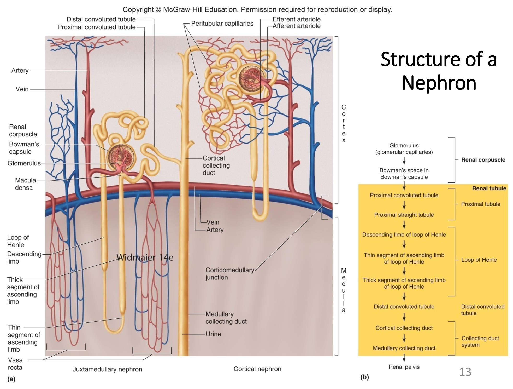
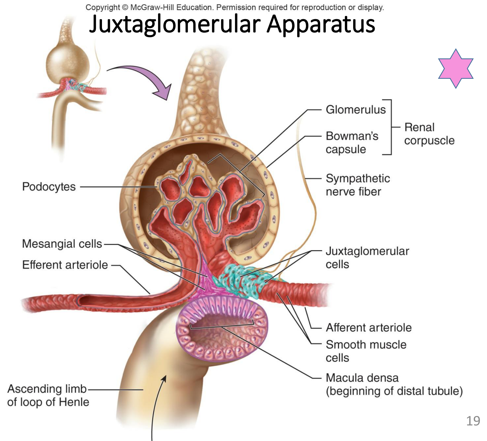
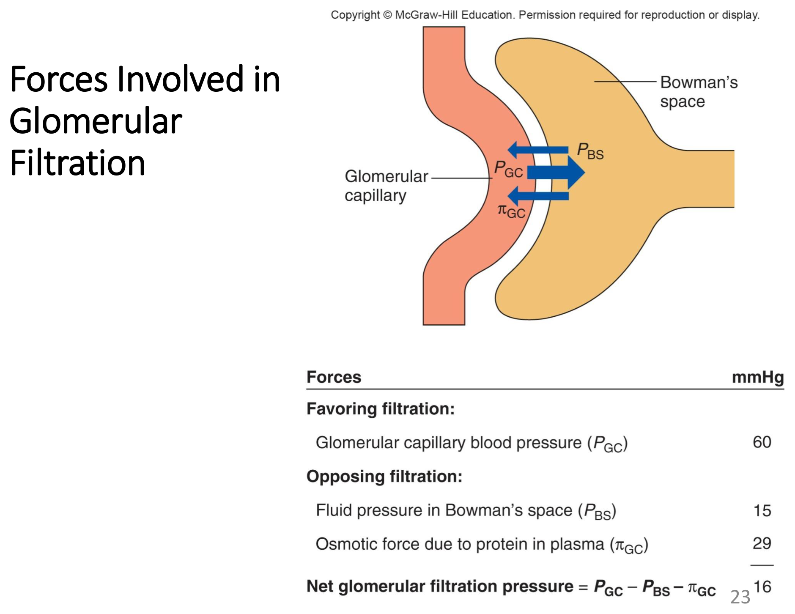
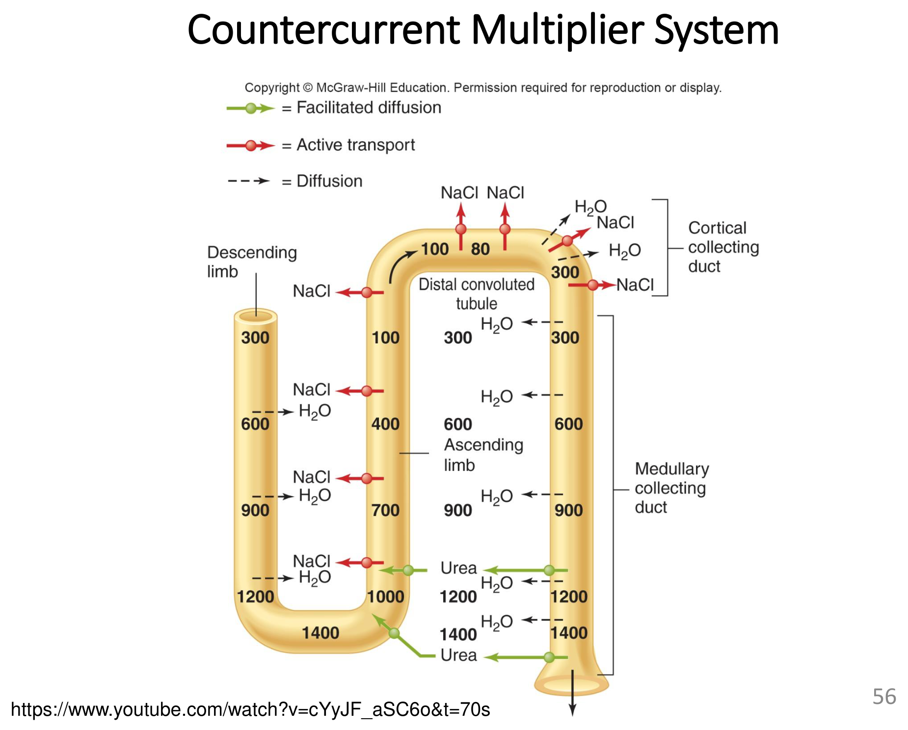

腎元構造
腎元（nephron）是腎臟的結構與功能單位，每顆腎臟約含超過百萬個腎元，理解其構造分段是理解後續所有腎臟功能（過濾、再吸收、分泌、濃縮）的解剖基礎。

皮質腎元 vs 近髓腎元
占多數，亨利氏環短，主要位於腎皮質
約占15%，亨利氏環長、深入腎髓質，是尿液濃縮機轉的主要貢獻者，位於皮質髓質交界處
腎元的三大功能
- 過濾 Ultrafiltration：血漿在腎絲球被過濾進入鮑氏囊
- 再吸收 Reabsorption：物質從腎小管腔移回血液
- 分泌 Secretion：物質從血液移入腎小管腔
兩套微血管系統
腎元伴隨兩組功能不同的微血管：腎絲球微血管（glomerular capillaries）專司過濾，是全身唯一由兩條小動脈（入球小動脈與出球小動脈）分別餵入與導出的微血管床，此特殊解剖設計使腎絲球內壓維持極高，利於大量過濾；管周微血管（peritubular capillaries，近髓腎元則為直血管vasa recta）則負責接收腎小管再吸收回來的物質，並參與尿液濃縮的對流交換機轉（見「對流倍增」章節）。
腎絲球旁器
腎絲球旁器（juxtaglomerular apparatus, JGA）是入球小動脈與遠曲小管起始段交會處的特化構造，是腎臟自我調節與RAAS系統啟動的關鍵感應站。

JGA的三種細胞角色
鮑氏囊內層高度特化的分支狀上皮細胞，足突間形成過濾裂隙，是過濾液進入鮑氏囊腔的最終通道
入球小動脈壁特化的平滑肌細胞，本身是機械感受器（偵測血壓），並儲存分泌腎素（renin）的顆粒
遠曲小管起始段一群緊密排列的高柱狀細胞，是化學感受器，偵測濾液中NaCl濃度變化
JG細胞與緻密斑協同運作，是管絲反饋（tubuloglomerular feedback）與RAAS系統（見「心血管功能整合」章節）啟動的關鍵感應站——兩者共同構成血壓與體液調節的核心迴路。系膜細胞（mesangial cells）則類似平滑肌細胞，可收縮調節腎絲球內血流分布，並吞噬過濾過程中卡在濾過膜上的大分子殘留物，具局部清道夫功能。
腎絲球過濾與GFR
腎絲球過濾是被動過程，依賴淨過濾壓將血漿中的水與小分子溶質推入鮑氏囊，其效率遠高於身體其他微血管床。
腎絲球為何是「超高效率」的過濾器
- 過濾膜表面積大，且對水與小分子溶質通透性極高
- 腎絲球內壓遠高於一般微血管（約55–60 mmHg vs 一般微血管約17 mmHg），是「雙小動脈」解剖設計的直接結果（見前節）
正常情況下每日約產生180公升過濾液，遠高於其他微血管床每日形成的3–4公升組織液——這是腎臟「過濾龐大血量、再精確回收所需物質」策略的量化展現。過濾時必須將血漿蛋白留在血管內以維持膠體滲透壓；若尿液中出現蛋白質（蛋白尿，proteinuria）或血球，提示過濾膜受損，常見於糖尿病或高血壓造成的腎損傷，若未治療可能進展至末期腎病。

GFR的關鍵數值（常考）
| 指標 | 正常值 | 說明 |
|---|---|---|
| 腎絲球過濾率 GFR | 約125 mL/min | 每分鐘形成的過濾液量 |
| 腎血漿流量 RPF | 約650 mL/min | 每分鐘流經腎臟的血漿量 |
| 過濾分率 FF | 約19–20% | FF = GFR / RPF，表示流入腎絲球的血漿中被過濾的比例 |
GFR與淨過濾壓成正比，在無調控介入的情況下，全身血壓上升將直接使GFR上升；但腎臟具備強大的自我調節能力（見下節），使GFR在相當大的血壓波動範圍內維持穩定。影響GFR的三個直接因子：腎血流量（RBF）、入球小動脈收縮（降低GFR）、出球小動脈收縮（先升高後降低GFR，依收縮程度而定）。
腎臟自我調節
腎臟自我調節（renal autoregulation）使GFR在平均動脈壓70–180 mmHg（正常約100 mmHg）的寬廣範圍內維持相對穩定，涵蓋兩種互補機制。
入球小動脈平滑肌的機械感受器偵測到血壓上升、血管壁被動擴張時，細胞內Ca²⁺增加、刺激血管收縮，抵銷血壓上升對腎絲球內壓的影響——與「血管生理學」章節肌源性反應原理相同
感受器是緻密斑：偵測到流至遠曲小管的NaCl與水流量增加（提示GFR過高）時，釋放ATP與腺苷等化學訊號，引發入球小動脈收縮，降低GFR回到正常範圍
兩種自我調節機轉皆屬局部（intrinsic）機制，不需外部神經或激素訊號介入，與「血管生理學」章節局部血流自我調節的整體邏輯一致；這也是為何在中度血壓波動範圍內，GFR能維持穩定、不隨全身血壓起伏而大幅波動的生理基礎。
再吸收與分泌基礎
腎小管對濾液的處理決定最終尿液的組成，再吸收與分泌兩種方向相反的運輸過程共同精細調控體液成分。
再吸收 Reabsorption
物質自腎小管腔移回血液，可經細胞旁路徑（paracellular，經細胞間隙，儘管有緊密接合仍可通透，主要用於離子）或跨細胞路徑（transcellular，經細胞本身）；可為主動（需ATP）或被動（不需ATP）。分工原則（division of labor）：近曲小管與亨利氏環負責絕大多數的再吸收（確保進入遠端小管的溶質與水量已大幅減少），遠端小管與集尿管系統則依當下生理需求進行精細調節（fine-tuning），決定最終尿液中排出的確切數量。
分泌 Secretion
物質自管周微血管移入腎小管腔，包括H⁺、K⁺、有機陰離子等。分泌功能的臨床意義：
- 排除藥物及其代謝物（許多藥物經此路徑清除，是藥物劑量調整需考量腎功能的原因）
- 清除經被動再吸收又需排除的不需要物質（如尿素、尿酸）
- 移除過多的K⁺
- 調控血液pH（H⁺分泌，見「體液電解質與體溫調節」章節酸鹼恆定）
轉運極限 Transport Maximum
多數主動再吸收路徑（如葡萄糖經SGLT共同運輸）具有轉運極限（Tm）——當濾液中的溶質濃度超過腎小管轉運蛋白的飽和能力，多餘的量將無法被完全再吸收、隨尿液排出。這是未妥善控制的糖尿病動物出現糖尿（glucosuria）的直接生理機轉：血糖過高使濾液中葡萄糖量超過近曲小管SGLT轉運蛋白的最大再吸收能力（Tm），多餘葡萄糖隨尿液流失。
鈉離子的再吸收幾乎都是主動運輸（經Na⁺/K⁺-ATPase），此主動運輸建立的電化學梯度，驅動許多其他物質（如葡萄糖、胺基酸）經次級主動運輸（secondary active transport，共同運輸）被動地隨鈉一起再吸收——這是理解近曲小管幾乎所有溶質再吸收機轉的核心概念，Na⁺可謂腎小管再吸收的「總開關」。
腎清除率
腎清除率（renal clearance）是評估腎臟功能的核心量化概念，理解不同物質清除率與GFR的相對大小關係，可反推該物質在腎小管中經歷再吸收或分泌的淨效果。
清除率公式
C = UV/P，其中U為尿中該物質濃度、V為尿流速率（mL/min）、P為血漿中該物質濃度。清除率代表「每分鐘有多少毫升血漿被完全清除某物質」的等效體積。
不同物質清除率與GFR的關係（重要比較）
| 物質 | 清除率 | 與GFR的關係 | 意義 |
|---|---|---|---|
| 菊糖 Inulin | ≈125 mL/min | C = GFR | 自由過濾、不被再吸收也不被分泌，是測量GFR的黃金標準（肌酸酐creatinine可作替代，但因有少量分泌而略高估GFR，準確度較低） |
| PAH（對胺基馬尿酸） | ≈670 mL/min | C > GFR | 自由過濾且被大量分泌，其清除率近似有效腎血漿流量（ERPF） |
| 葡萄糖 Glucose | ≈0 mL/min（正常） | C < GFR | 自由過濾，但正常濃度下幾乎完全被近曲小管再吸收 |
「清除率 = GFR」代表該物質僅被過濾、不被腎小管處理（過濾多少、排出多少）；「清除率 > GFR」代表該物質淨分泌大於再吸收；「清除率 < GFR」代表該物質淨再吸收大於分泌。這個判讀邏輯是理解腎清除率概念、也是常見計算題的核心推理框架。
對流倍增與尿液濃縮
腎臟能將尿液濃縮至遠高於血漿滲透壓的程度（可達1200–1400 mOsm/L，血漿約300 mOsm/L），此驚人能力來自亨利氏環與直血管構成的對流倍增系統（countercurrent multiplier）。
對流倍增的解剖基礎
「對流（countercurrent）」指相鄰管道內液體流動方向相反，大幅增加兩者間的交換機會與表面積效率。亨利氏環下行支對水通透、對溶質相對不通透；上行支對溶質通透（可主動運輸NaCl）、但對水不通透——這組不對稱通透性差異正是建立腎髓質高滲透壓梯度的關鍵。

直血管 Vasa Recta 的對流交換
直血管與近髓腎元的亨利氏環平行伴行，血管壁具尿素運輸蛋白與水通道，對水、尿素、NaCl皆具高通透性；其功能是以對流交換（countercurrent exchange，而非主動倍增）的方式，將血流帶走多餘水分的同時，盡量維持髓質已建立的高滲透壓梯度不被血流「沖淡」——若無此特殊排列，持續血流將很快消除辛苦建立的滲透壓梯度。
尿素再循環 Urea Recycling
集尿管深部（受ADH刺激）尿素經促進性擴散進入髓質間質，貢獻髓質滲透壓梯度的一部分，隨後部分尿素再擴散回亨利氏環繼續循環，此機制稱尿素再循環，是對流倍增系統額外的效率放大器。
ADH（Vasopressin）調控最終尿液濃縮
集尿管管壁對水的通透性依賴ADH是否存在：ADH經V2受體活化cAMP路徑，促使水通道蛋白（aquaporin-2, AQP2）插入集尿管主細胞頂端膜，使原本對水不通透的集尿管變得可通透，水得以順著已建立的髓質高滲透壓梯度被動流出、回到血液，尿液因而被濃縮（詳見「心血管功能整合」章節ADH雙重效果）。此系統設計使腎臟得以依身體水分狀態，在寬廣範圍內彈性調整尿液濃縮程度，而非固定輸出同一滲透壓的尿液。
每日需排出的代謝廢物溶質總量約600 mOsm，若尿液最大濃縮能力為1400 mOsm/L，則最小必要尿量（obligatory water loss）= 600 mOsm ÷ 1400 mOsm/L ≈ 0.44 L/day——這代表即使嚴重脫水，仍必須排出此最低限度尿量以清除代謝廢物，是理解「脫水動物仍會持續排尿」生理現象與臨床輸液計算的重要基礎概念。
鈉與水的腎調控
鈉是細胞外液滲透壓的主要決定因子，其再吸收幾乎發生於除亨利氏環下行支與髓質集尿管外的所有腎小管節段，是身體體液容積調控的核心。
短期與長期血壓/血容調控的整合回顧
鈉與水的腎臟調控與「心血管功能整合」章節的RAAS、ADH機轉完全整合：壓力感受器經血壓變化間接調控全身鈉平衡（血壓上升經壓力感受反射降低交感張力，間接減少腎鈉再吸收）；RAAS系統（腎素→Angiotensin II→醛固酮）促進遠曲小管與皮質集尿管的Na⁺再吸收；心房利鈉肽（ANP）則在心房壁過度伸張時分泌，促進腎臟排鈉排水，與RAAS作用方向相反，是體液容積過高時的代償機制。
大量流汗的代償反應
嚴重流汗會同時流失水分與電解質，造成血容量下降與滲透壓變化（依流失比例而定），觸發ADH與RAAS系統代償性活化，促進腎臟保水保鈉，是運動或高溫環境下維持體液恆定的重要機轉，過度流汗未及時補充水分與電解質是熱衰竭的重要成因。
口渴與鹽分食慾
口渴中樞位於下視丘，主要受血漿滲透壓上升與血容量／血壓下降兩類訊號刺激；鹽分食慾（salt appetite）則是動物在體內鈉缺乏時主動尋求攝取鹽分的行為驅力，兩者共同構成攝取端（相對於腎臟保存端）的體液恆定調控。
鉀、鈣與磷的腎調控
除鈉與水外，腎臟也是鉀、鈣、磷等重要電解質恆定的主要調控器官，各自受不同激素系統主導。
鉀離子調控
鉀主要經醛固酮驅動的主動分泌於遠曲小管與集尿管排出（見「心血管功能整合」章節醛固酮機轉）：醛固酮促進主細胞頂端膜Na⁺再吸收與K⁺分泌的偶聯運輸，因此凡是刺激醛固酮分泌的因子（高血鉀本身、Angiotensin II）皆會促進K⁺排除，形成自我調節的負回饋迴路。
鈣與磷調控
副甲狀腺素（PTH）增加遠曲小管對鈣的再吸收，是PTH升高血鈣整體效果的一環（另見「內分泌生理II」章節PTH完整作用）
PTH減少腎小管對磷的再吸收（促進磷排出），與其對鈣的作用方向相反——這組相反效果共同維持血鈣血磷的適當比例，是常見考題重點
利尿劑分類
利尿劑是促進鈉與水排出的藥物，依作用機轉與部位可分數大類，是臨床心衰竭、高血壓、水腫治療的核心藥物族群。
| 類別 | 代表藥物 | 作用機轉 |
|---|---|---|
| 滲透性利尿劑 | 甘露醇 Mannitol | 可被過濾但不被再吸收的醣類，藉滲透效應留住水分於管腔內，一併排出 |
| 環利尿劑 Loop Diuretics | furosemide（利尿劑Lasix） | 抑制亨利氏環上行支的Na⁺再吸收，破壞髓質滲透壓梯度的建立，是效果最強的利尿劑類別 |
| Thiazide類 | hydrochlorothiazide | 作用於遠曲小管，抑制Na⁺-Cl⁻共同運輸 |
| 保鉀利尿劑 | spironolactone（醛固酮受體拮抗劑） | 競爭性阻斷醛固酮作用，減少遠曲小管與集尿管的Na⁺-K⁺幫浦活性，因而減少K⁺排除（見「心血管功能整合」章節） |
此外，酒精（ethanol）也具利尿效果，機轉是抑制腦垂體後葉釋放ADH，使集尿管對水的再吸收減少——這是飲酒後頻尿現象的生理基礎，也是理解ADH調控尿液濃縮的臨床實例。
排尿反射
尿液自腎小管形成後，經腎盞、腎盂、輸尿管送達膀胱儲存，最終經排尿反射（micturition reflex）排出體外，此反射同時受自主與軀體神經雙重調控。
尿液排出路徑
腎小管→（大小）腎盞→腎盂→輸尿管→膀胱（儲存）→尿道→體外，排尿由神經反射啟動，使膀胱壁平滑肌（逼尿肌）收縮、將尿液排出。
膀胱的三重神經支配
促進逼尿肌收縮，是排尿反射的主要驅動
促進膀胱儲尿（抑制逼尿肌收縮、收縮內尿道括約肌）
支配外尿道括約肌（隨意控制），使排尿具備一定程度的意識調控能力
尿失禁（incontinence）指非自主性尿液滲漏，常見類型包括應力性尿失禁（因咳嗽、打噴嚏、運動等腹壓增加誘發）與急迫性尿失禁（伴隨強烈尿意，常因膀胱或尿道發炎刺激所致，如細菌性膀胱炎）。急迫性尿失禁可用拮抗副交感神經對逼尿肌作用的藥物治療；應力性尿失禁則可能需改善膀胱尿道支撐結構（如荷爾蒙療法改善局部組織張力，嚴重者需手術）。
學習重點整理
本章的核心是「過濾大量、精細回收」的腎臟運作哲學，以及對流倍增系統如何建立髓質高滲透壓梯度。考題常考「GFR關鍵數值」「清除率與GFR大小關係判讀」「對流倍增亨利氏環通透性」「PTH對鈣磷相反效果」。
練習題
涵蓋腎元構造、腎絲球過濾、清除率、對流倍增、電解質調控等章節重點，題型參照國考與轉學考命題方向（含計算題），先自己作答再點「顯示答案」核對。
腎絲球微血管是全身唯一由兩條小動脈（入球小動脈餵入、出球小動脈導出）分別串聯的微血管床，這種特殊解剖設計使腎絲球內壓能維持在約55–60 mmHg（遠高於一般微血管床約17 mmHg），是腎臟每日能產生約180公升過濾液的關鍵解剖基礎。
C = UV/P = (100 × 1.25) / 1 = 125 mL/min。肌酸酐自由過濾、幾乎不被再吸收，僅有少量分泌，因此其清除率可作為GFR的臨床替代指標（雖準確度略低於菊糖，但因菊糖需外源注射，臨床上肌酸酐清除率或血漿肌酸酐濃度仍是最常用的腎功能評估指標）。
清除率大於GFR，代表除了經腎絲球過濾進入尿液的部分外，腎小管還額外分泌了更多該物質進入濾液中，使最終尿液排出量超過單純過濾所能達到的量，PAH即是這類物質的典型範例，其清除率因此常被用來估算有效腎血漿流量（ERPF）。
亨利氏環下行支對水通透、對溶質相對不通透，因此管內液體隨下行深入髓質而逐漸被動濃縮（水被吸出）；上行支則相反，對溶質（尤其NaCl，可主動運輸）通透但對水不通透，NaCl被主動運出建立髓質間質高滲透壓梯度，這組不對稱通透性差異正是對流倍增系統建立髓質滲透壓梯度的核心機轉。
PTH增加遠曲小管對鈣的再吸收（是PTH升高血鈣整體效果的一環），但同時減少腎小管對磷的再吸收（促進磷排出），兩者作用方向相反，共同維持血鈣與血磷之間的適當比例關係，是內分泌與腎臟生理學跨章節整合的常見考點。
轉運極限是指腎小管上皮細胞上負責主動再吸收特定溶質的轉運蛋白（如近曲小管的SGLT葡萄糖共同運輸蛋白），其單位時間內能處理的溶質總量存在生理上限；當濾液中該溶質的濃度超過此上限，多出的部分將無法被完全再吸收，會隨尿液排出體外。在未妥善控制血糖的糖尿病動物身上，血糖濃度過高導致濾液中的葡萄糖總量超過近曲小管SGLT轉運蛋白的轉運極限，使原本應被完全再吸收回血液的葡萄糖有部分無法及時處理、隨尿液流失，形成糖尿，這也是臨床上「驗尿糖」可作為篩檢糖尿病或評估血糖控制狀況的生理基礎。
環利尿劑（如furosemide）抑制亨利氏環上行支對NaCl的主動再吸收，直接破壞對流倍增系統建立髓質高滲透壓梯度的能力，使集尿管即使在ADH作用下也無法有效將水再吸收回血液（因缺乏梯度驅動），因此利尿效果最為強大，臨床常用於急性心衰竭或嚴重水腫的快速利尿治療。